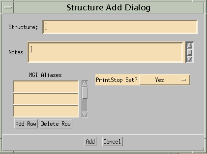

- Structure
- Text field where one can specify either an alias or a preferred name for a structure to search for, or edit the preferred name of a structure.
- Notes
- Text field where one can specify a note to search for, or edit an existing note.
- MGI Aliases
- Table of MGI-added aliases associated with a structure. Editable, but not searchable. Searching for structures by their aliases is done using the Structure field.
- Edinburgh Aliases
- Table of Edinburgh-added aliases associated with a structure. Not editable or searchable.
- MGI Added
- Allows user to restrict searches to MGI-added structures, Edinburgh-added structures, or to specify no restriction ("Search All" option). Displays the MGI-added attribute for a node, if a node is selected.
- MGI Added Name
- Allows user to restrict searches to MGI-added names, Edinburgh-added names, or to specify no restriction ("Search All" option). By names, we mean "preferred names" or "aliases". Search field only - does not display results.
- PrintStop set
- Allows user to restrict searches to structures that have their printStop set, not set, or to specify no restriction ("Search All" option). Displays
the printStop status for a node, if a node is selected.
- Stage(s)
- Text field allowing the user to restrict what stages are searched during a query. Displays the stage of the current structure if the user has selected a node. Query syntax examples:
"4": Searches only stage 4.
"1-4": Searches stages 1 through 4, inclusive.
"8, 10, 12": Searches stages 8, 10, and 12 only.
"1-4, 8, 10-12": Searches stages 1 through 4, stage 8, and stages 10 through 12.

Visual representation of the Anatomical Dictionary's structure hierarchy. All 28 stages are shown as children of a node called "Stages". Each stage tree is empty initially, until a query is done that contains results within a particular tree. Trees are loaded once per session (unless explicitly cleared) and are incrementally updated to reflect modifications to the database. Clicking on a node within the tree causes that node to become the current node, displaying the node's attributes in the Edit form.
Structures are represented by "folder" and "leaf" nodes. Folders contain other nodes and are drawn as the familiar file folder icon. Leaf nodes have no children and are drawn as a small gray sphere (for lack of a better icon for a tissue).
Navigating the tree is done by double-clicking on closed folders to open them and display their children. Open folders may be closed by double-clicking on them,or single-clicking the adjacent '-/+' icons.
- Results count
- "n Search Results" is displayed after each search, showing how
many results were returned.
- Results list
- A list of structure results from the last query. Each row has the
form:
StageNN:structure1;structure2;...;structureK
(The exact form of the qualified name depends on the setting of the printStop attribute for that node).
Clicking on each row changes the current structure to the one described by that row, populates the edit form, and traverses the treeDisplay to show the chosen node.
- Search
- Initiates a search, using the content of the Edit form as search criteria.
- Clear
- Has two pulldown options:
- Clear: Clears the edit form
- Clear Form/Stages: Clears the edit form and purges all loaded subtrees (not usually necessary, unless one wants to detect deletes performed by other users).
- Modify
- Updates the current record with changes specified in the Edit form.
- Add
- Invokes an Add dialog that contains a subset of the fields used within
the Edit form. Allows a new node to be created as a child of the
currently-selected node.
- Delete
- Deletes the currently-selected node.
- Previous (an arrow button, pointing up)
- Traverses up the search results list, changing the current node to the one previous in the list.
- Next (an arrow button, pointing down)
- Traverses down the search results list, changing the current node to the one next in the list.
- Created
- Displays the date the current node was created.
- Modified
- Displays the date the current node was last modified.
The structure clipboard is an area used to assemble sets of structures that will be used during the entering of assay data.
- Add Current
- Add the current structure to the clipboard table.
- Delete
- Deletes the current structure from the selected row in the clipboard table.
- Clear
- Clears all rows in the clipboard table.

Fields are identical in semantics to those in the Edit form, except for the query semantics associated with the Edit form fields. The Add operation is used for specifying a new node, not searching for one.